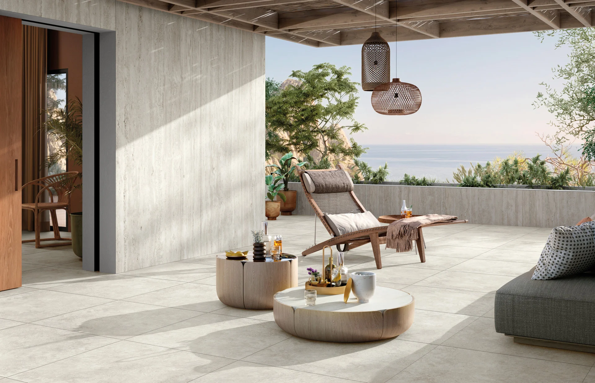
Aranżacja partnera / LibetElysian Travertini ↗01 / 07
Zobacz, co może zmienić Twoją przestrzeń
Cały wybór produktów ↗Nowości i dobry design.
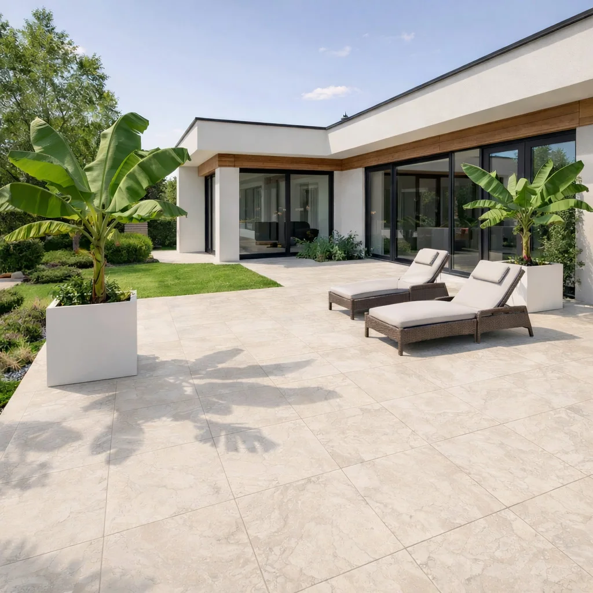
Nowość w katalogu producentaCrusil / Tarasy
Sabbia Doro — DuoProCeram
Ciepły odcień kamienia i ceramiczna powierzchnia na betonowym kompozycie. Płyty DuoProCeram 4.0 tworzą jasne tło dla tarasu i ogrodowej zieleni.
Szczegóły u partnera ↗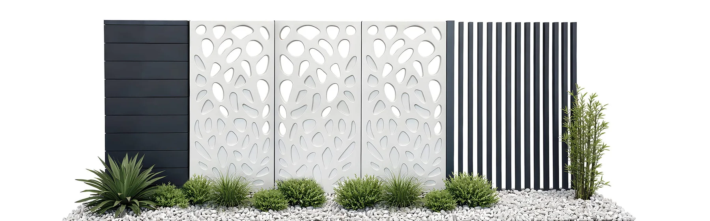
Wybór MarkinCrusil / Ogrodzenia
Leste — panele dekoracyjne
Organiczny ażur przepuszcza światło i podkreśla rośliny. Panele z betonu WHPC Tegal pozwalają wydzielić miejsce odpoczynku lub zbudować dekoracyjne ogrodzenie.
Szczegóły u partnera ↗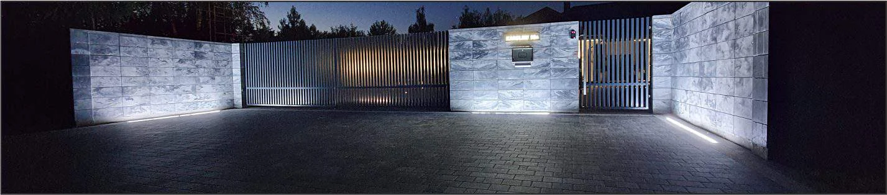
Nowość w ofercie producentaLedBruk / Światło
LedBruk-Line ALU Oprawa liniowa 24V
Jedna linia światła, zupełnie inny wieczór. Podkreśl geometrię tarasu, ścieżek i wejścia do domu.
Szczegóły u partnera ↗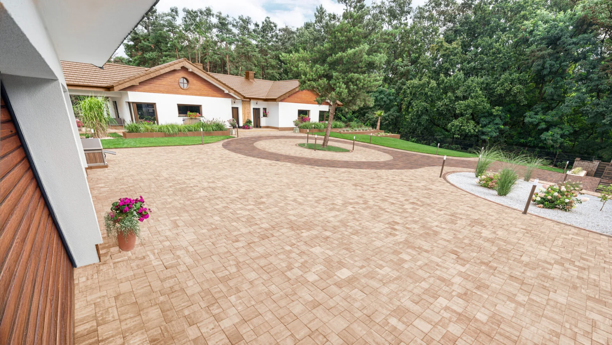
Nowy kolorDrogbruk / Kostka
Primavera Lumino
Nadaj nawierzchni nowy charakter. Zestaw odcień z elewacją, zielenią i detalami swojego domu.
Szczegóły u partnera ↗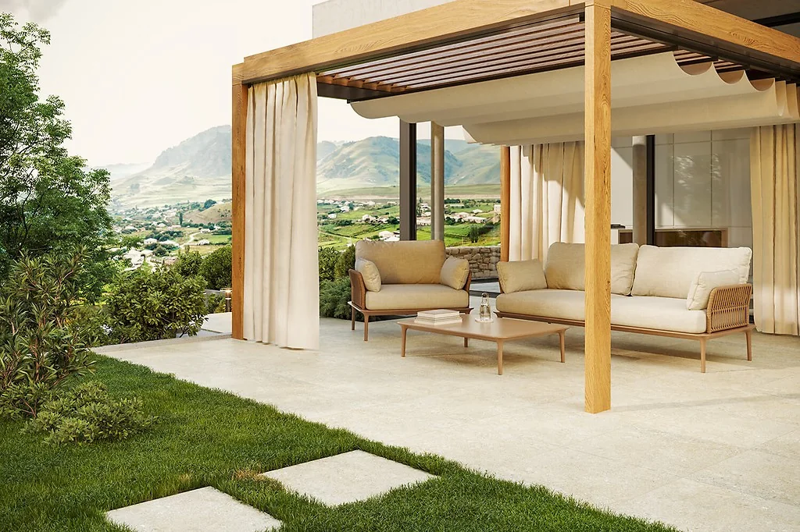
Wybór MarkinCersanit / Tarasy
Stonematch 2.0 Beige
Beżowa płyta z matowego gresu, przeznaczona do aranżacji tarasu. Ma 59,3 × 59,3 cm, rektyfikowane krawędzie i mrozoodporną powierzchnię; ciepła tonacja dobrze współgra z drewnem.
Szczegóły u partnera ↗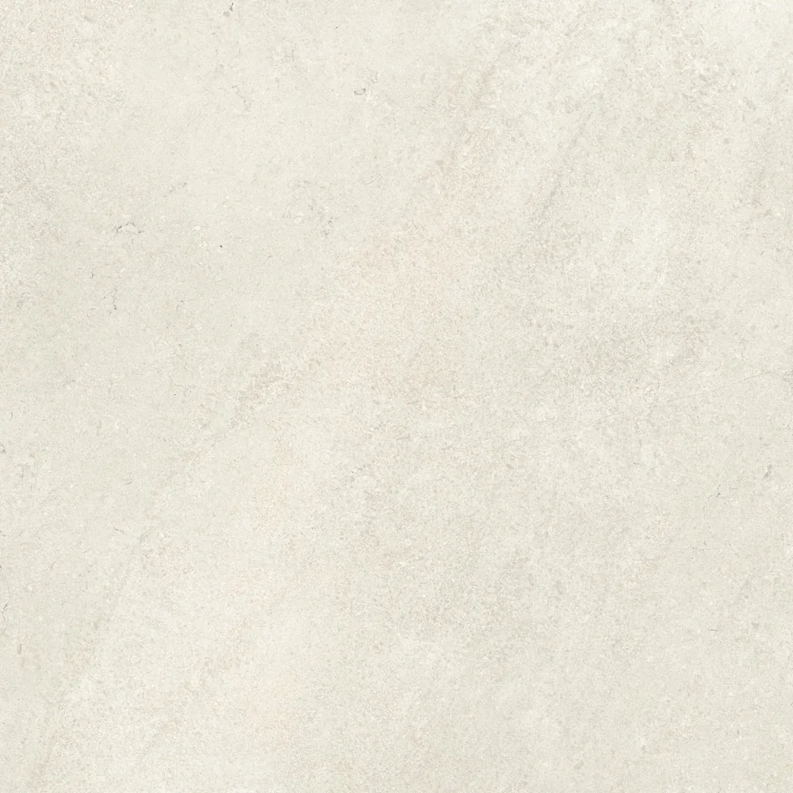
Nowość w katalogu producentaTARRACE / Tarasy
Sandy Stone 20 Beige · 60 × 60 cm
Jasnobeżowy gres o kamiennym wzorze i grubości 20 mm sprawdzi się w kompozycji z drewnianą pergolą lub jasną elewacją. Kwadratowy format pozwala poprowadzić równe podziały wzdłuż tarasu.
Szczegóły u partnera ↗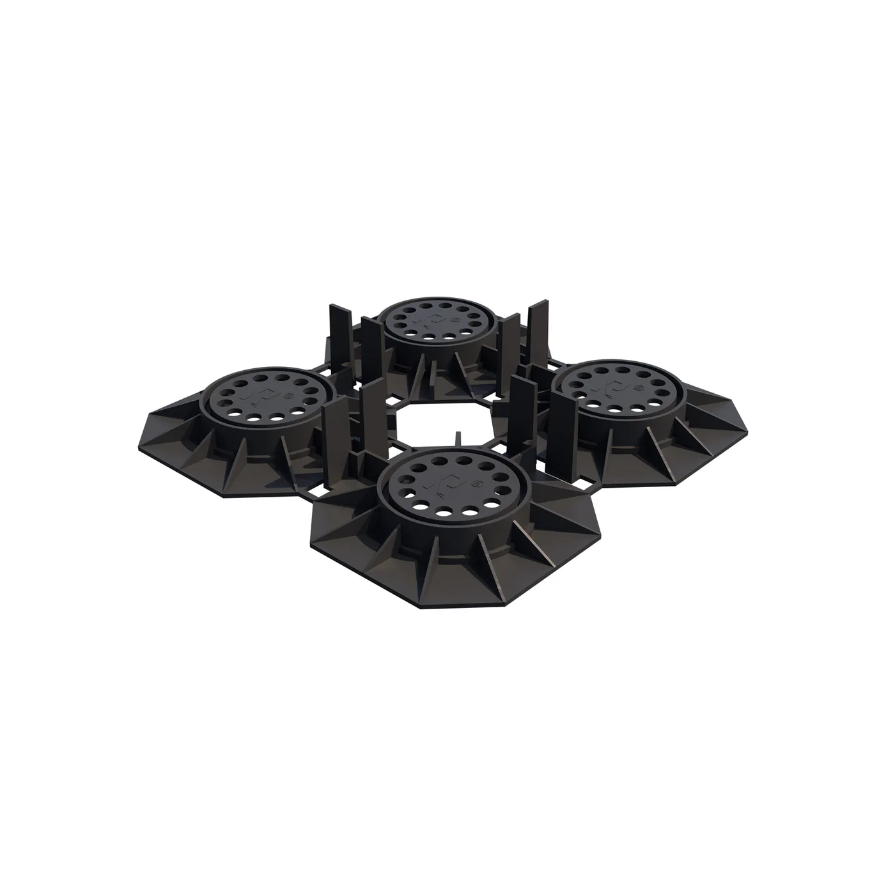
Wybór MarkinRenoplast / Systemy tarasowe
Wspornik SMART – fuga 2 mm
Wspornik o stałej wysokości do płyt układanych bez klejenia na tarasach i balkonach. Wbudowane dystanse wyznaczają między płytami szczelinę szerokości 2 mm.
Szczegóły u partnera ↗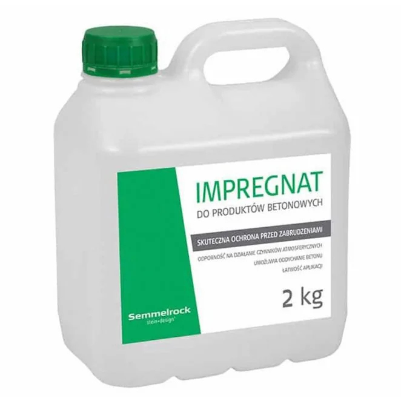
Wybór MarkinSemmelrock / Pielęgnacja
Pave Care Impregnat
Impregnat do betonowych kostek i płyt ogranicza wnikanie wody, oleju i zabrudzeń. Pozostawia matową powierzchnię bez zmiany koloru. Zużycie podane przez producenta to 100–300 ml/m², zależnie m.in. od porowatości betonu.
Szczegóły u partnera ↗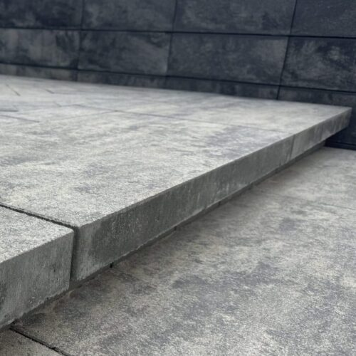
Nowość w katalogu producentaPater / Architektura ogrodowa
Stopień schodowy LEVITO
Cień pod wysuniętą krawędzią sprawia, że betonowe schody wyglądają lekko. LEVITO to barwiony w masie element do ruchu pieszego; sposób osadzenia zaplanuj z wykonawcą.
Szczegóły u partnera ↗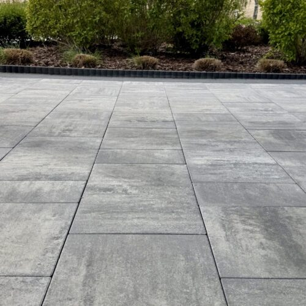
Nowość w katalogu producentaPater / Tarasy
Płyta MULTI
Trzy długości modułu — 20, 40 i 60 cm — pozwalają zmieniać rytm podziałów bez zmiany szerokości pasa. Wersja o grubości 6 cm nadaje się również na podjazd dla samochodów do 3,5 t.
Szczegóły u partnera ↗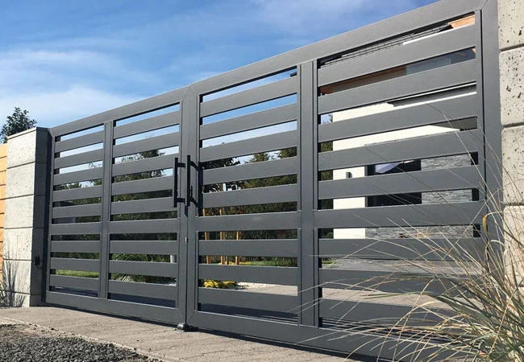
Wybór MarkinSLABB / Ogrodzenia
Aluminiowe przęsła NIVE
Lekkie wizualnie, poziome przęsła zestawione z betonem. System prezentowany przez SLABB jako uzupełnienie bloczków ogrodzeniowych.
Szczegóły u partnera ↗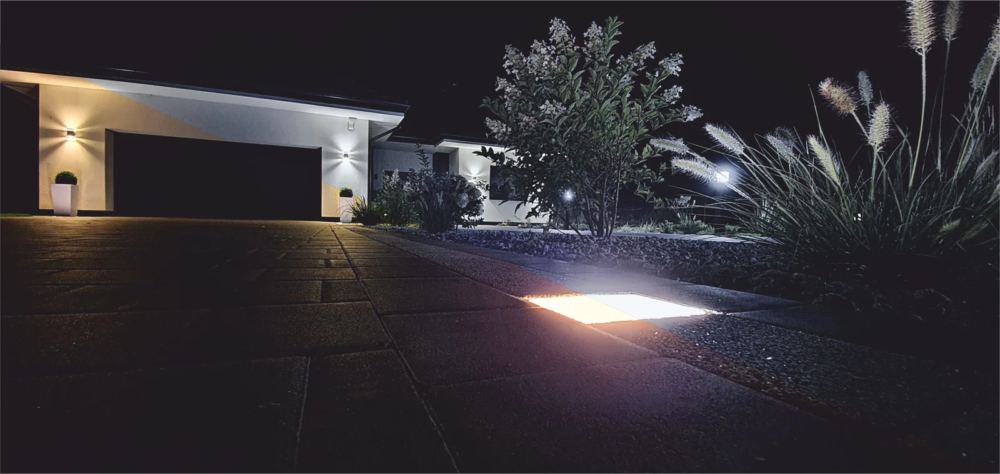
W nowościach producentaLedBruk / Światło
LedBruk® Kostka Brukowa LED RGB+CCT
Światło zmienia ogród po zmroku. Podkreśl przebieg ścieżki i nadaj wieczorom własny nastrój.
Szczegóły u partnera ↗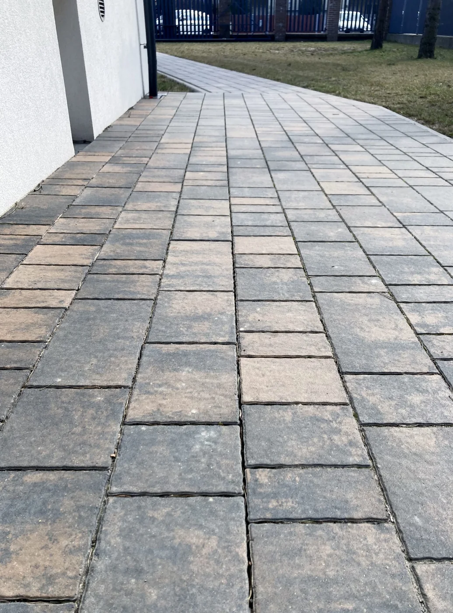
Wybór MarkinPater / Kostka
Kostka Roma
Kostka betonowa o grubości 6 cm na ścieżki i podjazdy dla samochodów do 3,5 t. W jednej kompozycji można zestawić elementy o różnych rozmiarach, a odcienie dobrać do elewacji i zieleni.
Szczegóły u partnera ↗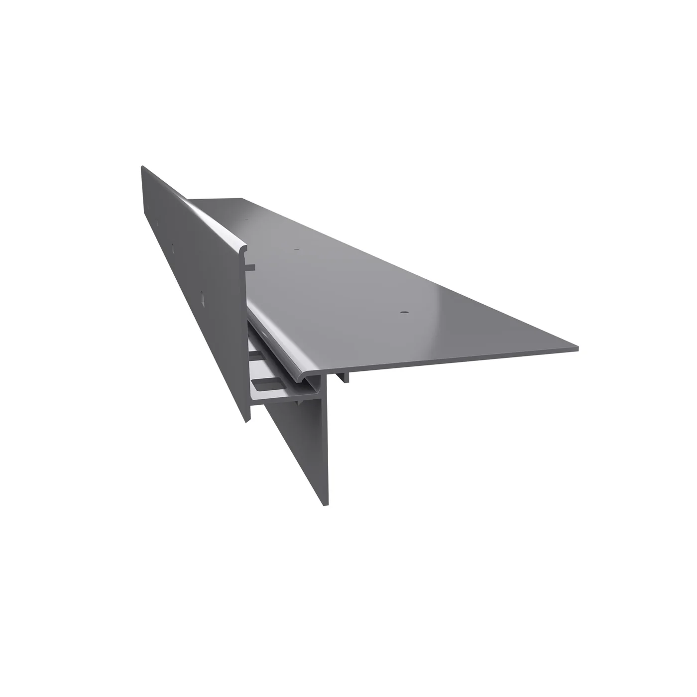
Wybór MarkinRenoplast / Systemy tarasowe
Profil okapowy W35 PLUS
Aluminiowy profil do krawędzi tarasu lub balkonu z płytą ceramiczną o grubości 2 cm na wspornikach. W systemie PRO W35 PLUS współpracuje z rynnami R50 lub RK65.
Szczegóły u partnera ↗ Wybór Markin
Wybór Markin
Nanobauer / Pielęgnacja
Paving Cleaner
Zasadowy preparat do chłonnych nawierzchni betonowych i brukowych. Pomaga oczyścić kostkę z ciemnego nalotu przed dalszą pielęgnacją. Sposób użycia dobierz według etykiety i najpierw wykonaj próbę w mało widocznym miejscu.
Szczegóły u partnera ↗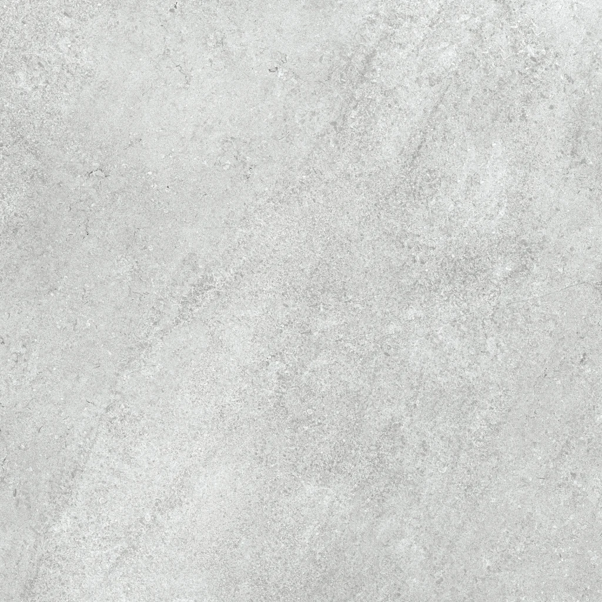
Nowość w katalogu producentaTARRACE / Tarasy
Sandy Stone 20 Grey
Szary wariant Sandy Stone ma format 60 × 60 cm i grubość 20 mm. Zestaw go z jasną elewacją, żeby zaznaczyć granicę między ścianą domu a tarasem.
Szczegóły u partnera ↗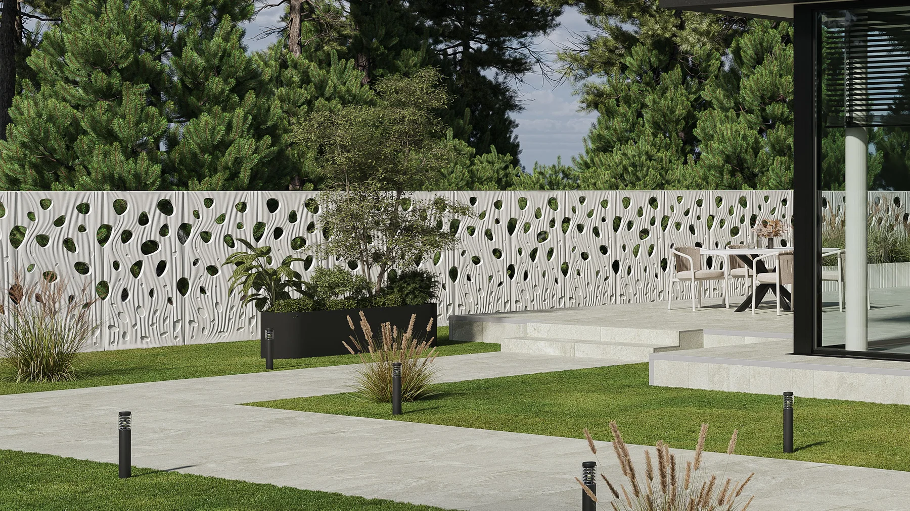
Wybór MarkinCrusil / Ogrodzenia
Aspre — panele ażurowe
Smukłe otwory i rytm białych płaszczyzn. Ażurowe panele Aspre tworzą lekką wizualnie oprawę patio, tarasu i granicy ogrodu.
Szczegóły u partnera ↗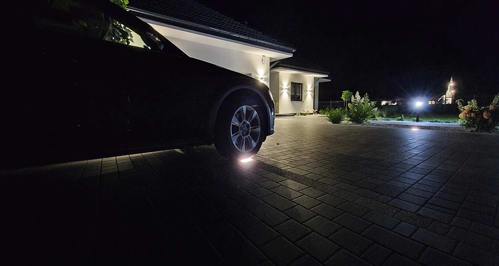
Wybór MarkinLedBruk / Światło
LedStone — świecący kamień
Świetlny akcent wśród zieleni. Wydobądź z ogrodu nastrój, którego nie widać za dnia.
Szczegóły u partnera ↗ Wybór Markin
Wybór Markin
Libet / Kostka
Imola Retta Colormix
Cztery formaty i przenikające się odcienie. Ułóż ścieżkę lub taras z wyrazistym, geometrycznym rytmem.
Szczegóły u partnera ↗ Wybór Markin
Wybór Markin
Nanobauer / Pielęgnacja
Paving
Impregnat dla osób, które chcą zachować naturalny wygląd bruku. Producent przewiduje go do zabezpieczania kostki przed wodą i zabrudzeniami bez celowego pogłębiania koloru.
Szczegóły u partnera ↗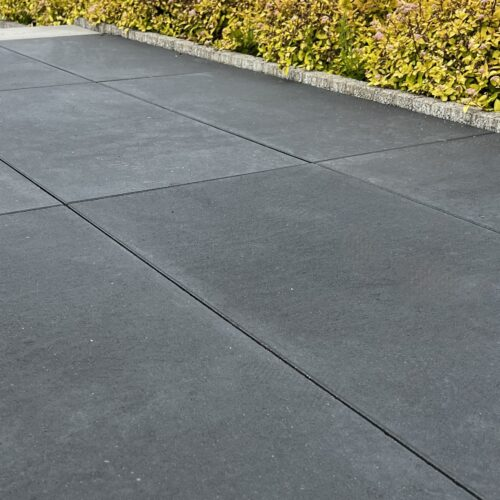
Nowość w katalogu producentaPater / Tarasy
Płyta GIGA
Prostokąt 120 × 60 cm porządkuje duży taras kilkoma długimi liniami. Betonowy element ma 8 cm grubości; Pater dopuszcza go także na podjazdy dla pojazdów do 3,5 t.
Szczegóły u partnera ↗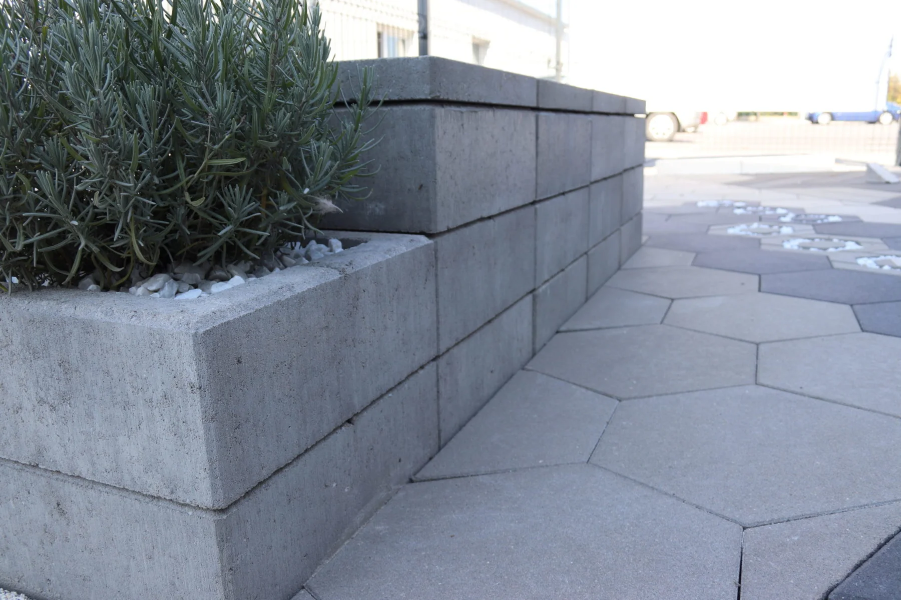
Wybór MarkinLibet / Ogrodzenia
Ogrodzenie Maxima
Prosta forma, mocny efekt. Połącz słupki i murek z materiałami użytymi wokół domu.
Szczegóły u partnera ↗ Wybór Markin
Wybór Markin
Nanobauer / Pielęgnacja
Oil Cleaner
Preparat do punktowego czyszczenia tłustych plam na bruku, betonie i kamieniu naturalnym. Przydaje się na przykład wtedy, gdy na podjeździe po samochodzie zostaje ślad oleju.
Szczegóły u partnera ↗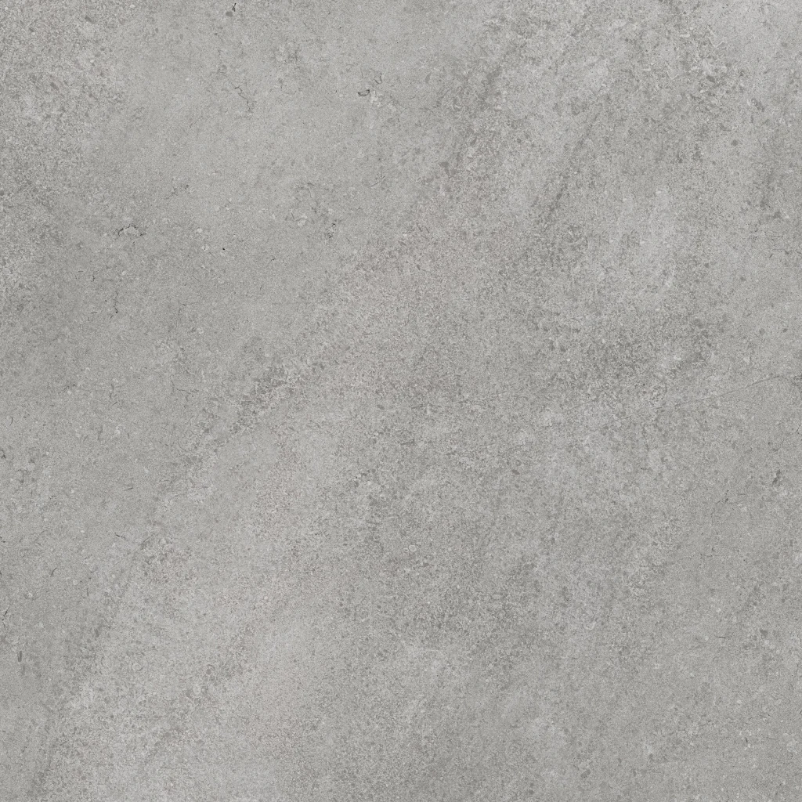
Nowość w katalogu producentaTARRACE / Tarasy
Sandy Stone 20 Taupe
Szaro-beżowe płyty Marazzi z oferty TARRACE łączą kamienny rysunek z matowym wykończeniem. Kwadrat 60 × 60 cm pozwala poprowadzić spoiny równolegle do pergoli albo krawędzi tarasu.
Szczegóły u partnera ↗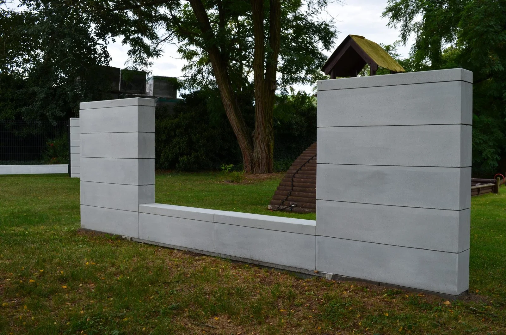
Wybór MarkinDrewbet / Ogrodzenia
CUBO GIGA
Pustak o długości 100 cm. Długie poziome linie porządkują ogrodzenie i podkreślają bryłę domu.
Szczegóły u partnera ↗ Wybór Markin
Wybór Markin
Nanobauer / Pielęgnacja
Paving Wet
Ten wariant impregnacji podkreśla barwę bruku i daje tzw. efekt mokrej kostki. Jeśli wolisz wygląd naturalnej, suchej nawierzchni, porównaj go z preparatem Paving i wykonaj próbę na próbce materiału.
Szczegóły u partnera ↗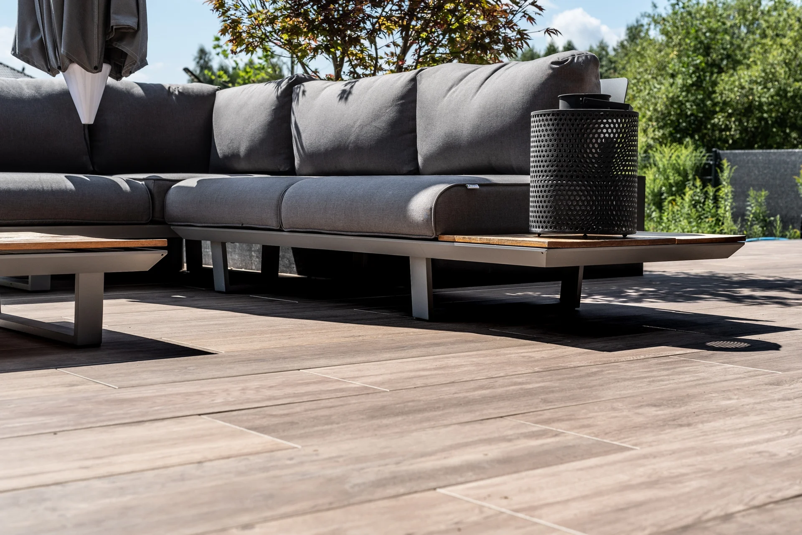
Wybór MarkinLibet / Tarasy
Nau
Wygląd drewna w porcelanowym gresie. Ciepła podłoga wizualnie łączy taras z ogrodowym salonem.
Szczegóły u partnera ↗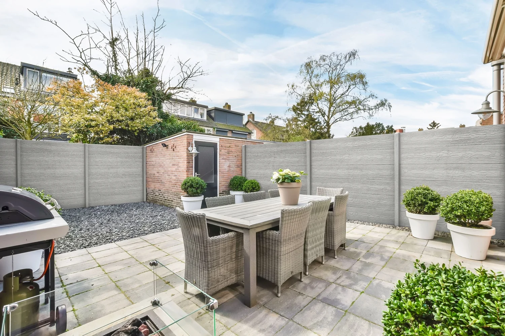
Wybór MarkinDrewbet / Ogrodzenia
Panele dwustronne Deska
Betonowe panele z rysunkiem deski. Osłoń strefę wypoczynku i nadaj granicy ogrodu jednolity, poziomy rytm.
Szczegóły u partnera ↗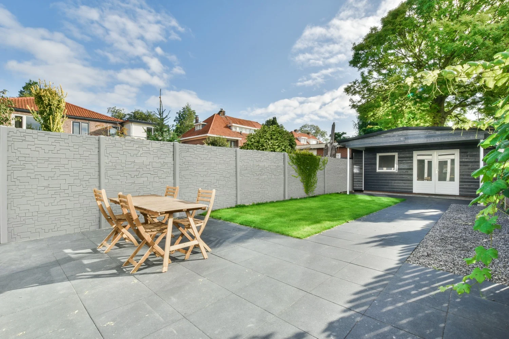
Wybór MarkinDrewbet / Ogrodzenia
Panele dwustronne Graf
Geometryczna faktura po obu stronach ogrodzenia. Wyraziste tło dla rabat, trawnika i miejsca spotkań.
Szczegóły u partnera ↗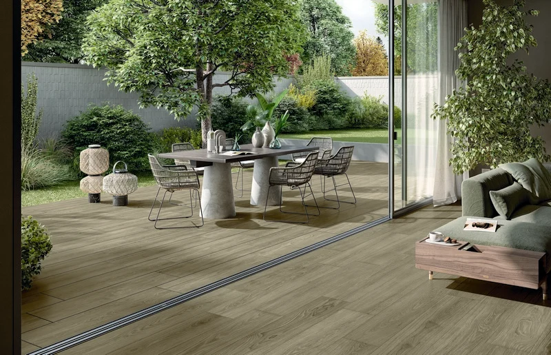
Wybór MarkinLibet / Tarasy
Oudh
Rysunek inspirowany drewnem w otoczeniu bujnej zieleni. Dobry punkt wyjścia do przytulnej, naturalnej kompozycji.
Szczegóły u partnera ↗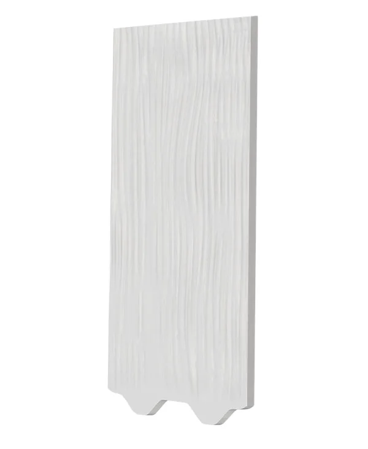
Wybór MarkinCrusil / Ogrodzenia
Maestro — panele pełne
Pełna dekoracyjna płyta z betonu WHPC Tegal. Subtelna faktura porządkuje tło dla zieleni i pozwala wyraźniej osłonić wybraną strefę posesji.
Szczegóły u partnera ↗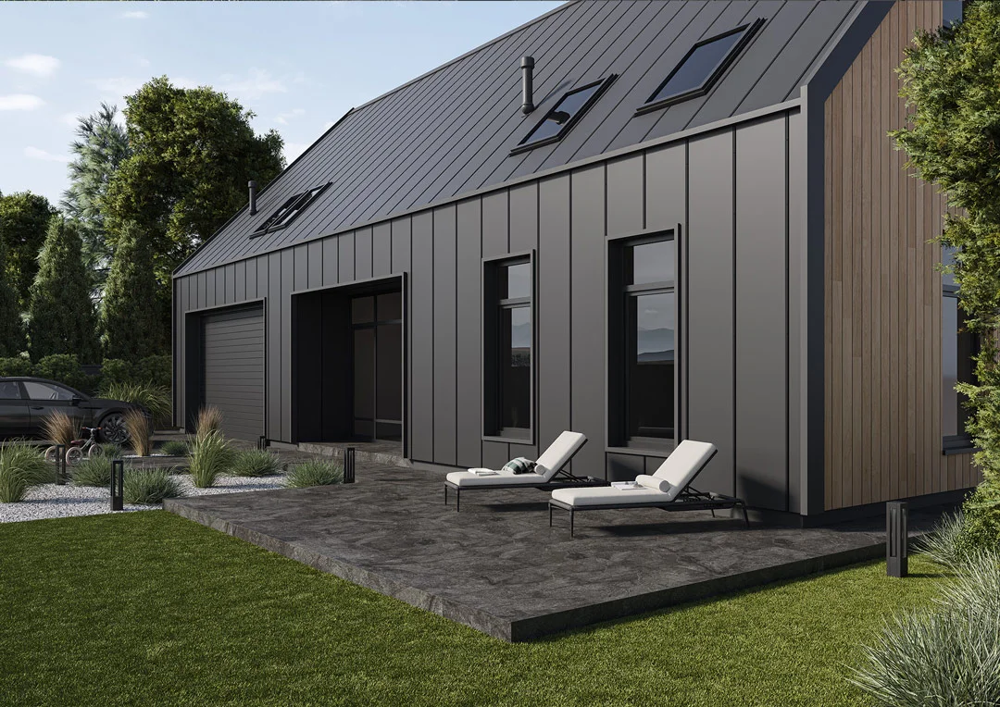
Wybór MarkinCrusil / Tarasy
Pietra Antica Black — DuoProCeram
Głębokie grafitowe tony i kamienny rysunek ceramiki. Hybrydowe płyty DuoProCeram pozwalają połączyć taras i dojście do domu wyrazistym materiałem.
Szczegóły u partnera ↗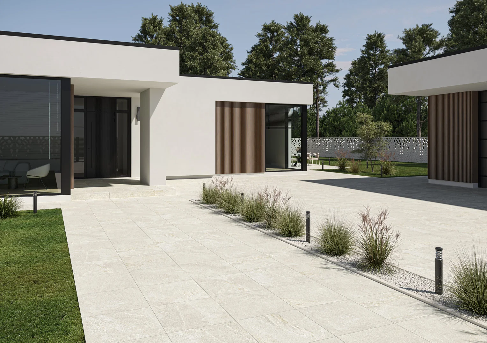
Wybór MarkinCrusil / Tarasy
Quartz Pumice — DuoProCeram
Jasna ceramika inspirowana kamieniem i skałą wulkaniczną. W płytach DuoProCeram dekoracyjna warstwa łączy się z kompozytową podstawą.
Szczegóły u partnera ↗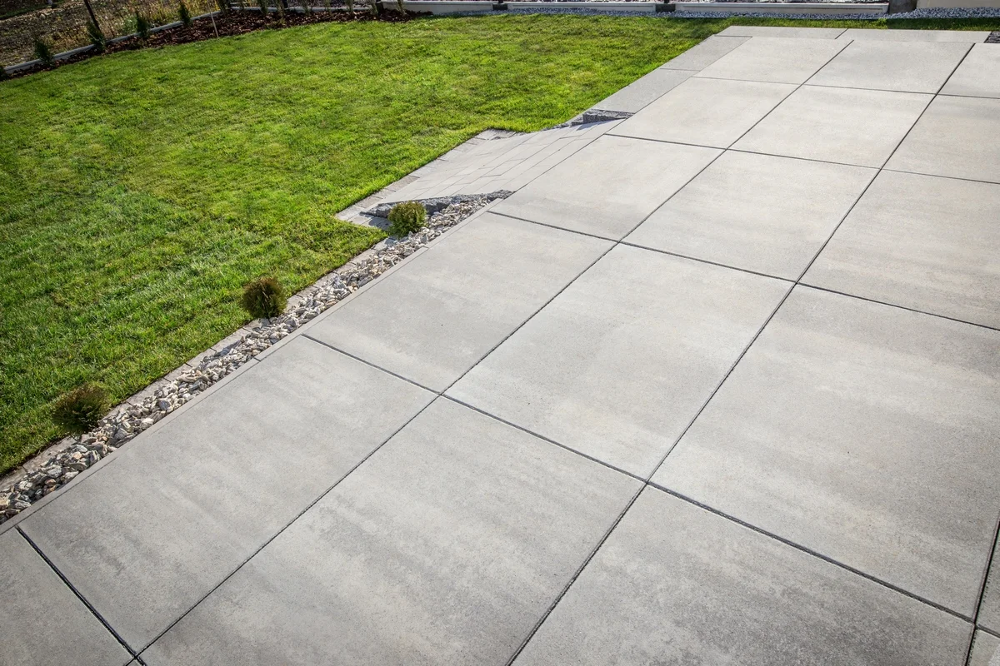
Wybór MarkinLibet / Tarasy
Maxima XL
Duży format, spokojny rytm. Płyty, które nadają tarasowi zdecydowany, nowoczesny charakter.
Szczegóły u partnera ↗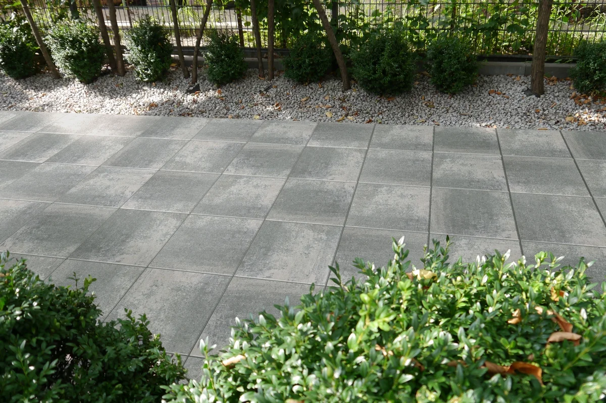
Wybór MarkinLibet / Tarasy
Monza
Taras w naturalnych odcieniach. Połącz prostą geometrię płyt z zielenią i miękkimi dodatkami.
Szczegóły u partnera ↗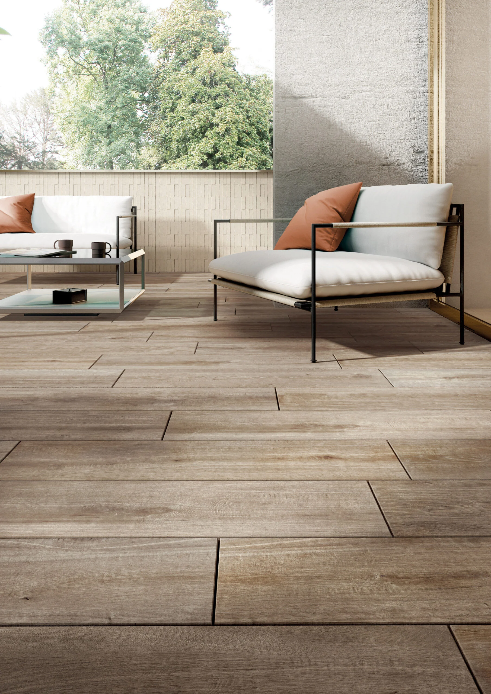
Wybór MarkinLibet / Tarasy
Kao
Drewniany rytm w ceramicznym wydaniu. Podłużny format nadaje strefie wypoczynku ciepły, uporządkowany wygląd.
Szczegóły u partnera ↗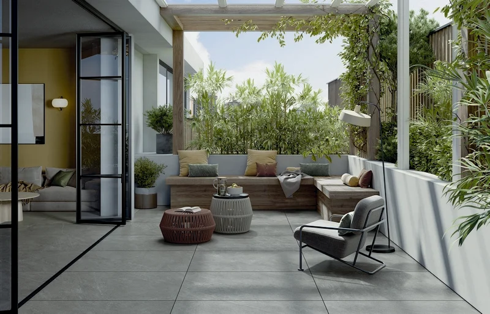
Wybór MarkinLibet / Tarasy
Motley
Taras wśród zieleni, z kamiennym rysunkiem pod stopami. Stwórz zaciszne miejsce na kawę i długie rozmowy.
Szczegóły u partnera ↗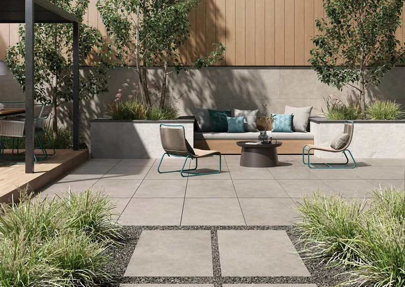
Wybór MarkinLibet / Tarasy
Elysian
Subtelne odcienie kamienia i oszczędna kompozycja. Płyty tworzą tło dla lekkich mebli i swobodnie rosnących traw.
Szczegóły u partnera ↗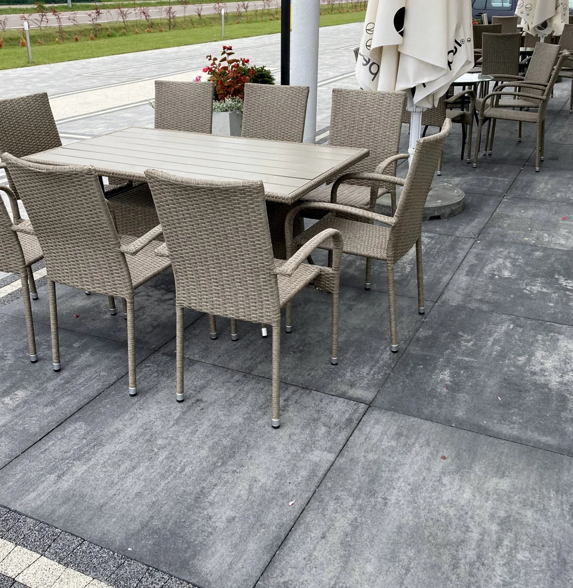
Wybór MarkinPater / Tarasy
Płyta Solo
Kwadrat o boku jednego metra pozwala położyć taras z niewielką liczbą spoin. Betonowa płyta ma 3 cm grubości; producent przewiduje ją na tarasy, balkony i ścieżki dla pieszych.
Szczegóły u partnera ↗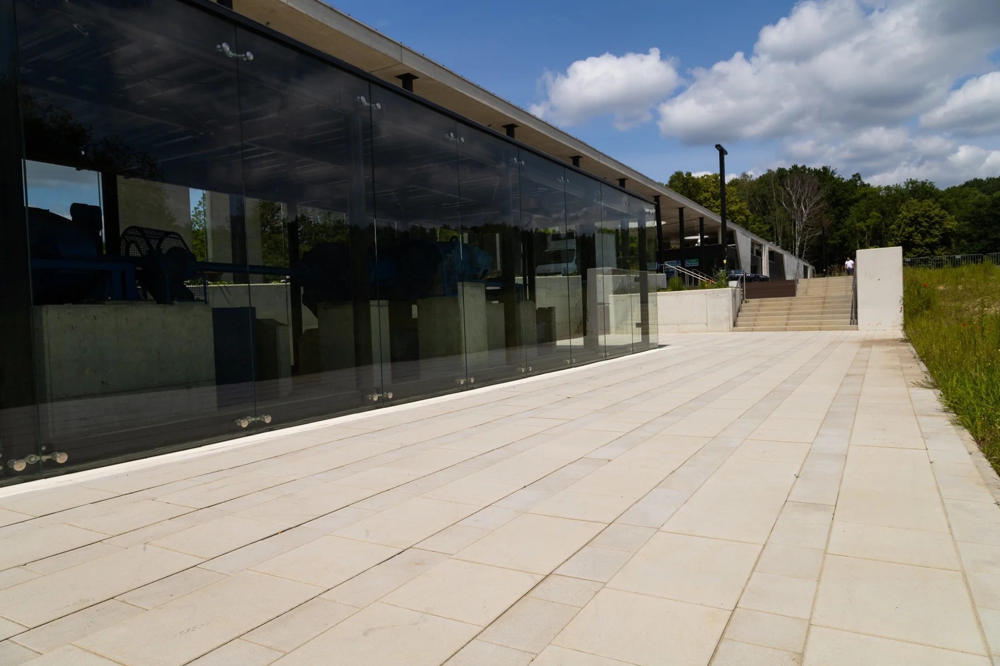
Wybór MarkinSemmelrock / Tarasy
Mayesto bello
Kwadratowa płyta 80 × 80 cm z gładkiego betonu, o grubości 8 cm. Na tarasie daje regularny układ szerokich pól; niewielka faza podkreśla krawędzie, a wbudowane odstępniki pomagają utrzymać równy rozstaw.
Szczegóły u partnera ↗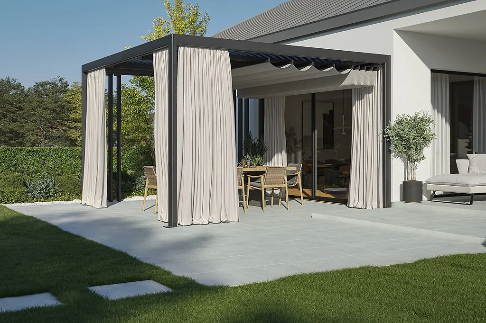
Wybór MarkinCersanit / Tarasy
Geo 2.0 Cold Grey
Chłodnoszary, matowy gres na taras o wymiarach 59,3 × 59,3 cm. Płytka z serii 2.0 jest mrozoodporna i rektyfikowana, więc pozwala zaprojektować posadzkę z powtarzalnym rytmem kwadratowych pól.
Szczegóły u partnera ↗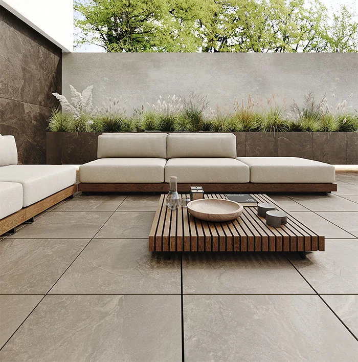
Wybór MarkinTubądzin / Tarasy
Grand Cave Brown koraTER STR
Kamienny rysunek i matowe wykończenie w dużym prostokątnym formacie 119,8 × 59,8 cm. Tarasowy wariant ma 20 mm grubości; producent potwierdza mrozoodporność i klasę antypoślizgowości R11 B.
Szczegóły u partnera ↗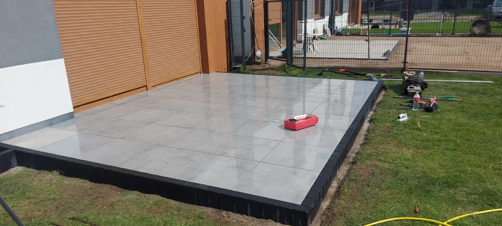
Wybór MarkinNew Form / Tarasy
Goliat White · 60 × 60 × 2 cm
Jasna, kwadratowa płyta tworzy spokojne tło dla mebli i zieleni. Równy rytm fug dobrze podkreśla prostokątny obrys tarasu. Na zdjęciu aranżacja tej wersji z galerii New Form.
Szczegóły u partnera ↗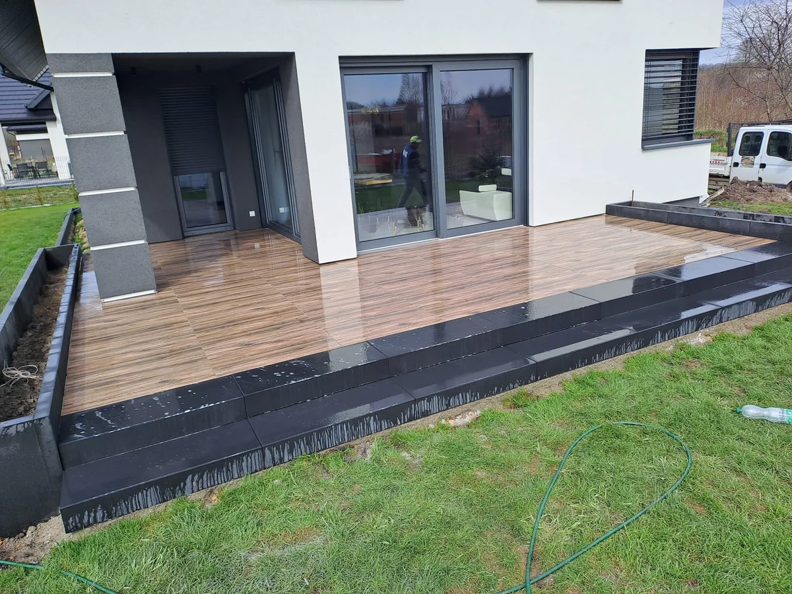
Wybór MarkinNew Form / Tarasy
Patio Oak · 90 × 45 × 2 cm
Prostokątne płyty w dębowym odcieniu nadają tarasowi wyraźny kierunek. Brązowy rysunek gresu dobrze wypada obok jasnej elewacji i roślin o dużych liściach.
Szczegóły u partnera ↗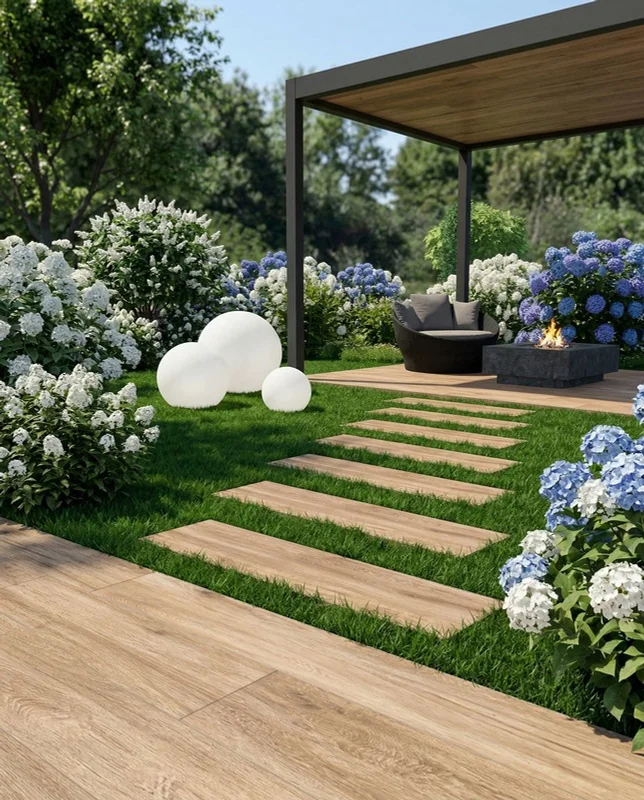
Wybór MarkinTARRACE / Tarasy
Dasco Beige · 29,7 × 120 cm
Długa płyta o grubości 20 mm łączy rysunek drewna z jasnym, beżowym odcieniem. W aranżacji z katalogu jej układ prowadzi od tarasu przez trawnik do osłoniętego miejsca wypoczynku.
Szczegóły u partnera ↗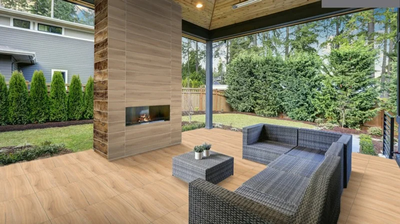
Wybór MarkinTARRACE / Tarasy
Royal Gold · 60 × 60 cm
Kwadratowa płyta drewnopodobna w złocistym odcieniu ma grubość 20 mm. Na zdjęciu z katalogu ciepła barwa posadzki wraca na ścianie tarasu i łączy obie powierzchnie wizualnie.
Szczegóły u partnera ↗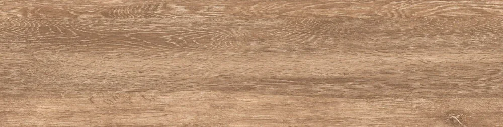
Wybór MarkinTARRACE / Tarasy
Dasco Honey · 29,7 × 120 cm
Smukła płyta o grubości 20 mm nawiązuje do deski tarasowej. Dłuższa krawędź nadaje kompozycji kierunek, a miodowe wybarwienie ociepla zestawienie z szarością elewacji.
Szczegóły u partnera ↗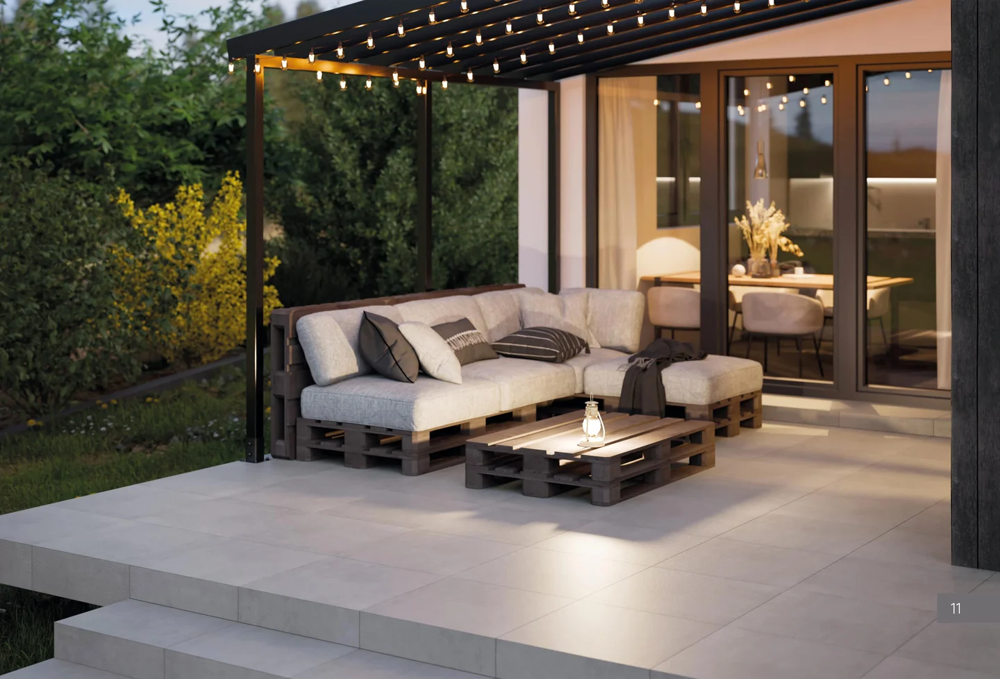
Wybór MarkinVerde Ceramika / Tarasy
Moon Light Grey Matt · 60 × 60 cm
Jasnoszary gres o matowej powierzchni i grubości 20 mm przeznaczono na tarasy i chodniki. Aranżacja z katalogu pokazuje, jak regularne kwadraty porządkują strefę przy drewnianej pergoli.
Szczegóły u partnera ↗Verde Ceramika / Tarasy
Jura Dark Grey Matt · 60 × 60 cm
Matowy gres o grubości 20 mm ma tonalny rysunek: poszczególne płyty lekko różnią się odcieniem. W aranżacji producenta szara nawierzchnia towarzyszy naturalnemu kamieniowi i drewnianym belkom.
Szczegóły u partnera ↗Verde Ceramika / Tarasy
Belgium Grey 2.0
Szary wzór z kolekcji Verde 2.0 można zestawić z grafitową stolarką lub ocieplić drewnem. Zdjęcie pokazuje teksturę udostępnioną przez markę, dzięki czemu łatwiej ocenić charakter materiału.
Szczegóły u partnera ↗Verde Ceramika / Tarasy
Pan Beige 2.0
Beżowa propozycja do spokojnych, ciepłych zestawień z jasną elewacją i ogrodową zielenią. Pokazaną obok teksturę można pobrać z oficjalnej biblioteki Verde 2.0 i wykorzystać przy planowaniu układu płyt.
Szczegóły u partnera ↗PRO-GRES / Tarasy
Alaplana Slipstop Amalfi Blanco · 60 × 120 cm
Jasny, matowy gres o wyraźnie wydłużonych proporcjach. Rektyfikowane krawędzie pozwalają zaplanować regularne podziały, a szerokość fugi dobiera się do podłoża i instrukcji producenta.
Szczegóły u partnera ↗PRO-GRES / Tarasy
Alaplana Slipstop Bodo White · 60 × 60 cm
Matowy gres w jasnym odcieniu, w kwadratowym formacie i z rektyfikowanymi krawędziami. To propozycja dla osób, które chcą oprzeć projekt na jednym kolorze i regularnej siatce podziałów.
Szczegóły u partnera ↗53 produktów · wybierz kierunek lub przesuń zdjęcia
Nowości producentów + Wybór Markin. Cenę i dostępność potwierdzimy dla Ciebie.